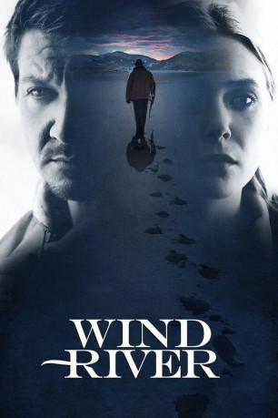

#8244 Wind River
 gesehen am 16.02.2018
gesehen am 16.02.2018
 
 IMDB-Wertung: 7.7 / 10
IMDB-Wertung: 7.7 / 10  Tomatometer: 87
Tomatometer: 87  Metascore: 73
Metascore: 73 
Cory Lambert (Jeremy Renner) arbeitet für die Fischerei- und Wild-Abteilung und macht vor allem Jagd auf Kojoten und andere Raubtiere im Indianer-Reservat Wind River. Den kürzlichen Tod seiner Teenager-Tochter hat er noch nicht überwunden, da stolpert er in der Wildnis über die Leiche einer vergewaltigten und erfrorenen Jugendlichen. Um den Täter zu fassen, wird die noch sehr junge FBI-Agentin Jane Banner (Elizabeth Olsen) auf den Fall angesetzt. Weil sie sich in dem rauen Gelände und mit den schwierigen Wetterverhältnissen vor Ort allerdings nicht auskennt, bittet sie Cory um Hilfe bei ihren Ermittlungen und gemeinsam brechen sie auf ins Ungewisse.
Jahr: 2017
Dauer: 107 Minuten
FSK: 16
Land: England Studio: Wild BunchTonspuren: DTS - ,
Untertitel: Deutsch,
Auflösung: 1080p (1920x808) Größe: 7505 MB
Genre: Thriller, Drama, Krimi, Mystery
Regisseur: Taylor Sheridan
Drehbuch: Taylor Sheridan
Soundtrack: Nick Cave, Warren Ellis
Darsteller:
- Kelsey Asbille als Natalie
 Jeremy Renner als Cory Lambert
Jeremy Renner als Cory Lambert Julia Jones als Wilma
Julia Jones als Wilma- Teo Briones als Casey
 Graham Greene als Ben
Graham Greene als Ben Elizabeth Olsen als Jane Banner
Elizabeth Olsen als Jane Banner Tantoo Cardinal als Alice Crowheart
Tantoo Cardinal als Alice Crowheart Eric Lange als Dr. Whitehurst
Eric Lange als Dr. Whitehurst Gil Birmingham als Martin
Gil Birmingham als Martin- Althea Sam als Annie
- Tokala Black Elk als Sam Littlefeather
- Martin Sensmeier als Chip
- Tyler Laracca als Frank
- Shayne J. Cullen als BIA Officer #1
- Austin R. Grant als Carl
- Ian Bohen als Evan
 Hugh Dillon als Curtis
Hugh Dillon als Curtis- Matthew Del Negro als Dillon
 James Jordan als Pete Mickens
James Jordan als Pete Mickens- Gabe Casdorph als Contractor #1
- Mason D. Davis als Contractor #2
- Chris Romrell als Contractor #3
 Jon Bernthal als Matt
Jon Bernthal als Matt- Blake Robbins als Tim
- Norman Lehnert als Dale
- Ian Roylance als Coroner
- Duy Beck als Native American Police Officer (uncredited)
- Teresa Duran-Norvick als Teacher (uncredited)
- Devin Hansen als Street Patron (uncredited)
- Tara Karsian als Ingrid (uncredited)
- Apesanahkwat als Dan Crowheart
- Dallin Tusieseina als BIA Officer #2
- Gus Sheridan als Classmate
- David Cardona als BIA Officer (uncredited)
Datei: X:\2017(N-Z)Wind River (2017, FSK16, 1920x808).mkv seit 12.02.2018
Festplatte: HD 2017(A-Z)-2018(A-F)
 Alle Filme aus Gruppe ''
Alle Filme aus Gruppe ''
- Wind River (der aktuelle Film)